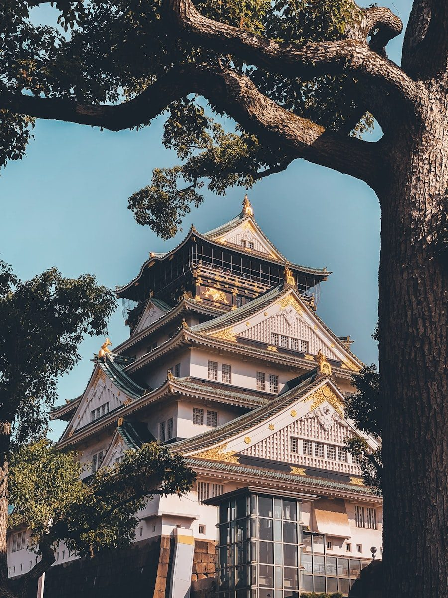

간사이 · 오사카
간사이 (오사카)
오사카를 중심으로 한 시내 여행 정보와 근교 당일치기 코스.
이 지역 스팟 둘러보기
소지역과 카테고리를 선택하면 실제로 가볼 만한 곳/먹을 곳이 바로 아래에 나옵니다.
🍽️ 우메다·난바
-
신파치 식당 (우메다점)
생선구이 정식을 파는 조식 맛집. 숯불에 구워 즉석 제공, 생선정식 1인분 2,500~2,700엔대로 가성비 좋음.
-
신파치 난바나카이도오리점
신파치 식당의 난바 지점. 생선구이 중심 일본 가정식.
-
메시아 24시 센니치마에
난바역 인근 24시간 영업 일본 가정식 식당. 메뉴 다양, 가격 합리적.
-
하나마루켄 24시
난바역 인근 24시간 영업 라멘 전문점.
-
마츠타케
난바역 인근 카페형 식당, 커피와 토스트로 아침식사 가능.
-
사키모토 베이커리
난바역 인근 베이커리 카페, 토스트·샌드위치 판매.
-
하코유메
난바역 인근 주먹밥(오니기리) 전문점. 오전 6시 30분부터 영업, 주문 즉시 만들어 제공.
-
더 그랜드 카페
우메다역 도보 5분, 힐튼플라자웨스트 6층. 통창 뷰의 브런치 카페. (이른 아침 영업 여부는 확인 필요)
-
소홀름 카페 다이닝 우메다(Soholm)
북유럽풍 카페, 통밀 팬케이크 전문. 이른 오픈 가능성은 있으나 정확한 오픈 시각은 확인 필요.
🗺️ 오사카 전역
-
오사카성
1583년 축성, 1931년 재건된 오사카의 대표 랜드마크. 전망대에서 시내 조망 가능.
-
도톤보리
오사카 대표 번화가·상점가.
-
유니버설 스튜디오 재팬(USJ)
할리우드 테마 어트랙션 테마파크.
-
오사카 가이유칸 수족관
세계 최대급 수족관 중 하나. 고래상어·펭귄·해파리 등 전시.
-
우메다 스카이 빌딩
높이 173m 쌍둥이 빌딩을 잇는 공중정원 전망대. 360도 시내 조망.
-
덴포잔 대관람차
오사카 임해 지역의 대형 관람차.
🗺️ 고베
-
기타노이진칸
산노미야역 인근, 서양식 건축물이 모인 옛 외국인 거주 지역.
-
우로코노이에(うろこの家)
기타노이진칸 내 가장 먼저 공개된 대표 이진칸. 비늘 모양 외벽이 특징.
-
고베 하버랜드
항구 전망·쇼핑·레스토랑이 모인 복합 관광지구.
-
메리켄 파크
고베항의 해양공원, 야경 명소.
-
고베 포트타워
메리켄 파크 내 랜드마크 타워, 높이 약 108m, 360도 전망대.
-
모자이크(umie MOSAIC)
하버랜드 내 쇼핑·레스토랑 복합단지.
조건에 맞는 스팟이 아직 없습니다. 다른 필터를 선택해 보세요.